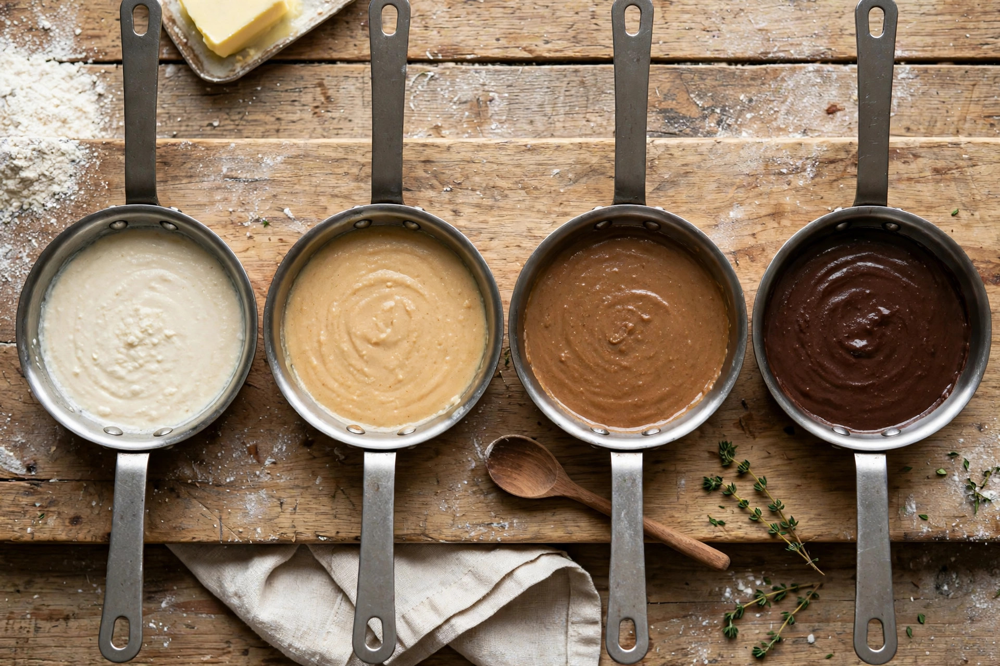

From Wikipedia, the free encyclopedia
| Roux | |
|---|---|
 | |
| Type | Thickening agent |
| Main ingredients | Flour, fat (traditionally butter) |
| Origin | French cuisine |
Roux (/ˈruː/) is a mixture of flour and fat cooked together and used to thicken sauces and soups. It is one of the basic building blocks of classical French cuisine — the basis of béchamel, velouté and espagnole, three of the five mother sauces — and is also fundamental to Cajun and Creole cooking, where dark roux is the foundation of gumbo and étouffée.
Equal parts flour and fat (by weight) — classically clarified butter, but oil, lard or bacon drippings are also used — are cooked together in a pan over moderate heat with constant stirring. The cooking gelatinises the starch and drives off the raw taste of the flour. Liquid is then whisked in gradually; the starch granules swell as the sauce comes to a simmer, producing a smooth, thickened result without lumps.
The longer a roux is cooked, the darker and more flavourful it becomes — but its thickening power diminishes, because prolonged heat breaks down the starch chains.
Roux became central to French cooking in the 17th century, replacing earlier thickeners such as bread crumbs and egg yolks. It is generally credited to the era of François Pierre La Varenne, whose Le Cuisinier françois (1651) described flour-and-fat thickening. Antonin Carême codified its use in the 19th century, and Auguste Escoffier refined the system of mother sauces built upon it.